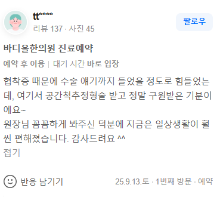

의학적 증례 분석 (요추 척추관협착증 임상 경과 요약)
타 의료기관에서 수술적 조치를 권유받았을 정도로 심각한 하지 방사통과 보행 장애(간헐적 파행)를 호소하던 중증 척추관협착증 환자의 증례입니다. 구조적 공간 확보를 위한 보존적 감압 교정 치료를 적용한 결과, 요추 분절의 기계적 압박이 완화되었으며 하지 혈류 및 대퇴신경 자극 증상이 안정적으로 개선되어 정상적인 일상생활 수행이 가능해진 경과를 확인할 수 있었습니다.

척추관협착증은 황색인대의 비후와 퇴행성 변형으로 인해 신경관 내부가 좁아지는 점진적 퇴행성 질환입니다.
단순히 통증 신호만 차단하는 일시적인 주사 치료와 달리, 물리적으로 요추 구조의 정렬을 바로잡고 내부 공간을 확장해야 파행 증상 없이 보행 거리를 연장할 수 있습니다.
바디올한의원은 정밀한 생체역학적 진단을 바탕으로 변형된 척추 축을 전방위적으로 재정렬하여 신경 압박의 근본 원인을 해소합니다.
척추관협착증(Spinal Stenosis)은 외상성 디스크 질환과 달리, 연령 증가에 따른 퇴행성 변화로 인해 척추 뼈가 두꺼워지고 척추관 내부의 황색인대가 비정상적으로 증식하면서 신경이 지나가는 통로 자체가 사방에서 조여드는 구조적 문제입니다[1]. 조금만 걸어도 하지 전반이 터질 듯이 저리고 통증이 발생하여 반드시 앉아서 쉬어야만 하는 '간헐적 파행'이 핵심 기전입니다. 이와 같은 상태는 단순히 염증을 가라앉히는 약물치료나 신경차단술만으로는 정렬이 무너지고 좁아진 물리적 신경관 공간을 구조적으로 다시 넓힐 수 없기 때문에, 많은 환자들이 수술 전 단계에서 안전하게 선택할 수 있는 생체역학적 보존 치료의 대안을 찾게 됩니다[2].
중증 협착증 보존 치료의 성패는 퇴행성 변화로 인해 정렬이 무너진 채 고착화된 척추체 간의 간격(Intervertebral Space)을 얼마나 안전하고 정밀하게 확보할 수 있는가에 달려 있습니다. 단순히 수기 압박만을 가하는 일반적인 추나요법으로는 이미 변형된 요추 분절의 구조적 공간을 확보하는 데 한계가 있습니다.
바디올한의원의 핵심 프로그램인 공간척추정형술(SART)은 전통 정골의학(Osteopathy) 및 추나요법의 원리를 바탕으로 척추 분절 간의 물리적 공간을 확보하는 생체역학적 보존 교정 기법입니다. 특수 교정 메커니즘을 통해 골반의 경사와 요추의 전만 곡선을 입체적으로 복원하고, 협착이 심화된 특정 요추 분절을 분리·견인하여 주행하는 신경근의 압박을 구조적으로 완화합니다. 이로 인해 신경관 내부의 공간이 물리적으로 확장되면 하지로 내려가는 미세 혈류 순환이 개선되면서, 중단 없이 한 번에 걸을 수 있는 보행 거리가 자연스럽게 늘어나게 됩니다. 현재 수원 인계동 본원은 물론 광교, 영통, 동탄 등 인근 주요 지역에서 척추 수술적 치료를 시행하기 전, 구조적 원인 개선을 도모하는 프리미엄 보존 솔루션을 받기 위해 많은 환자분들이 내원하고 계십니다.
• 척추관 타깃 감압 교정: 고착화된 요추 분절의 인대 유착을 물리적으로 해소하고 골반-요추-흉추의 수직 정렬을 정밀 재조정하여 신경관 내부의 압박을 원천적으로 완화합니다.
• 심부 코어 근육 재정렬: 요방형근, 장요근 등 척추 구조를 지탱하는 심부 대칭성을 회복시켜 구조적 교정 효과가 장기적으로 유지되도록 유도합니다.
• 봉약침 및 고농도 약침 요법: 좁아진 척추관 내부의 척수신경근 주위에 발생한 만성 염증 반응을 신속하게 배출하고 다리 방향으로 이어지는 방사통을 제어합니다.
• 골수 보충 치료 한약 처방: 퇴행성 변화로 인해 약화된 뼈와 관절 점막 구조를 보강하고 비후해진 인대 조직의 점진적인 연성화를 유도하여 척추 주변부의 구조적 안정성을 높입니다.